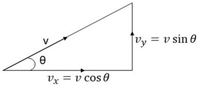
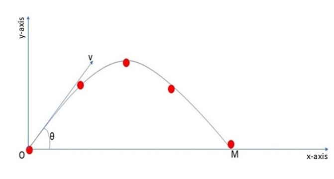
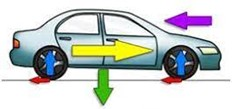
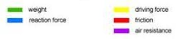

Mathematics in Physics
A brief introduction to the many applications of mathematics in the field of PhysicsProjectile Motion
This show the entire path that a projectile has travelled - for example, the displacement that a ball travels when being thrown until it reaches the ground. We can display the trajectory of the ball travels by plotting its displacement both vertically and horizontally.
We can calculate the displacement by using the initial velocity (v) and the angle (Θ) at which the ball was thrown. By using trigonometry, we can calculate the velocity of the ball in the vertical plane and in the horizontal plane.

Using these values of velocity along with the time (t) it took to reach the ground and the acceleration (a) of the ball. By using calculus, we can determine the displacement (s) of the ball in both the vertical plane and horizontal plane.
s = vt + ½at2
Then this displays a graph of horizontal displacement against vertical displacement, showing the whole trajectory that the ball has travelled.

Newton's Laws of Motion
This shows the behaviour of all the forces that are acting upon an object, as an object will only move once acted upon by an external force, but an object will remain stationary when all external forces acting upon it are equal within the same plane.
By using algebra, we can calculate all the forces that are acting upon the car, since force (F) is directly proportional to the mass (m) and its acceleration (a).
F = ma
 
For the forces acting in the horizontal plane (driving force, friction, and air resistance), we can determine whether the car is stationary or has a resultant force that allows the car to move either forwards or backwards.
Since the driving force is acting in the opposite direction to air resistance and friction, then those forces are acting opposite to each other. If the sum of air resistance and friction are equal to the driving force, then the car is stationary otherwise the car will be moving with the resultant force.
Other Uses
Calculus can be used to understand the behaviour of electric fields and magnetic fields- for example, determining how much current and voltage needs to run through the circuit for a light bulb to turn on. By using calculus this can be calculated, since the current (I) is directly proportional to voltage (V) and is inversely proportional to resistance (R).
V = IR
Statistics can be used to understand the properties of large collections of gas particles, for example how the particles behave within different materials. By using statistics this can be calculated, since the probability of the particles travelling in a random motion can be investigated to determine the behaviour of the individual gas particles.